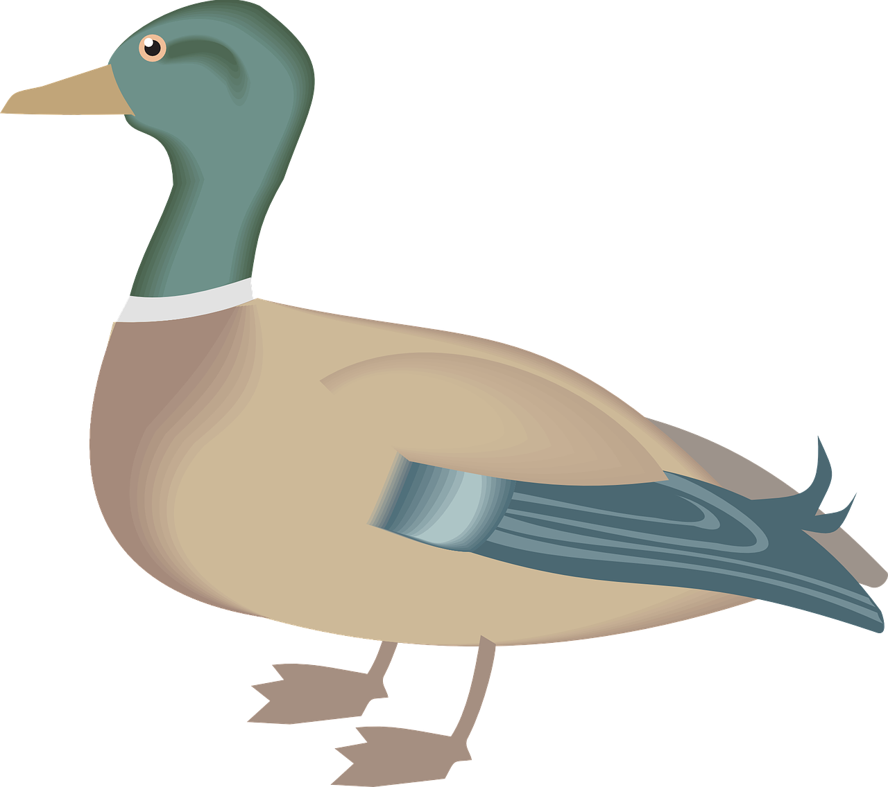

Lesson 44
ck /k/

ufliteracy.org


Lesson 44
ck /k/


See UFLI Foundations lesson plan Step 1 for phonemic awareness activity.


See UFLI Foundations lesson plan Step 2 for student phoneme responses.


ff
f
ll
l
ss
zz
z
s
u
e
i
o
a


See UFLI Foundations lesson plan Step 3 for auditory drill activity.

No slides needed for auditory drill.


See UFLI Foundations lesson plan Step 4 for blending drill word chain and grid.
Visit ufliteracy.org to access the Blending Board app.


See UFLI Foundations lesson plan Step 5 for recommended teacher language and activities to introduce the new concept.

c
k
ck

beginning
middle
end
rock
black
ck
c
k
ck

Handwriting paper for letter formation practice. Use as needed.
See UFLI Foundations manual for more information about letter formation.

back

rock
sick
pick
truck
stick
quack
back
quick
clock

See UFLI Foundations lesson plan Step 5 for words to spell.
Handwriting paper to model spelling.

See UFLI Foundations lesson plan Step 5 for words to spell.
Handwriting paper for guided spelling practice.


Insert brief reinforcement activity and/or transition to next part of reading block.

Lesson 44
ck /k/

New Concept Review

See UFLI Foundations lesson plan Step 5 for recommended teacher language and activities to review the new concept.
c
k
ck
beginning
middle
end
rock
black
ck
c
k
ck
back
pick
luck
clock


See UFLI Foundations lesson plan Step 6 for word work activity.
Visit ufliteracy.org to access the Word Work Mat apps.


See UFLI Foundations lesson plan Step 7 for irregular word activities.
The white rectangle under each word may be used in editing mode. Cover the heart and square icons then reveal them one at a time during instruction.

See UFLI Foundations manual for more information about reviewing irregular words.

your
Lesson 42+
Depending on dialect...
OU represents the /ū/ sound, or…
OUR represents the /or/ sound, or…
OUR represents the /er/ sound.
The white rectangle under the word may be used in editing mode. Cover the heart and square icons then reveal them one at a time during instruction.
want
Lessons 42-93
*Temporarily irregular
A represents the /ŏ/ sound. This is a low-frequency concept that has not been introduced yet.
In some dialects, A represents the /ŭ/ sound. In this case, ‘want’ would be a permanently irregular word.
The white rectangle under the word may be used in editing mode. Cover the heart and square icons then reveal them one at a time during instruction.
go
Lessons 43-65
*Temporarily irregular
O /ō/ has not been introduced yet.
The white rectangle under the word may be used in editing mode. Cover the heart and square icons then reveal them one at a time during instruction.
no
Lessons 43-65
*Temporarily irregular
O /ō/ has not been introduced yet.
The white rectangle under the word may be used in editing mode. Cover the heart and square icons then reveal them one at a time during instruction.
so
Lessons 43-65
*Temporarily irregular
O /ō/ has not been introduced yet.
The white rectangle under the word may be used in editing mode. Cover the heart and square icons then reveal them one at a time during instruction.
also
Lessons 43+
A /or/ has not been introduced yet.
O /ō/ has not been introduced yet.
The white rectangle under the word may be used in editing mode. Cover the heart and square icons then reveal them one at a time during instruction.
Handwriting paper for irregular word spelling practice. Use as needed.
See UFLI Foundations manual for more information about reviewing irregular words.
Teach
The orange star indicates these are new irregular words that need to be introduced.
See UFLI Foundations manual for more information about teaching irregular words.
goes
Lessons 44-65
O /ō/ has not been introduced yet.
ES spells /z/. This is an irregular way to add the -ES ending to a word.
The white rectangle under the word may be used in editing mode. Cover the heart and square icons then reveal them one at a time during instruction.
says
Lesson 44+
AY represents the /ĕ/ sound.
The final S represents the /z/ sound. This concept has already been introduced.
The white rectangle under the word may be used in editing mode. Cover the heart and square icons then reveal them one at a time during instruction.

Handwriting paper for irregular word spelling practice. Use as needed.
See UFLI Foundations manual for more information about teaching irregular words.


See UFLI Foundations lesson plan Step 8 for connected text activities.
Mum packs the best snacks.
The duck got stuck in the muck.
I want to pick up a stick and a brick.
See UFLI Foundations lesson plan Step 8 for sentences to write.

The UFLI Foundations decodable text is provided here. See UFLI Foundations decodable text guide for additional text options.
The Mud Track
Mack and Rick are at the mud track.
The pals see lots of trucks.
The big truck gets stuck in the mud.
The small truck goes fast on the track.
Mack and Rick clap.
Mack goes to the snack stand to grab a pack of gum.
At the snack stand, he sees his pals, Beck and Nick.
Rick sees the pack at the snack stand and yells, “Get back, quick!”
The pals run back to the track.
A truck ran into a stack of bricks!
The pack yells and jumps.
“The mud track is the best,” says Mack.

Insert brief reinforcement activity and/or transition to next part of reading block.